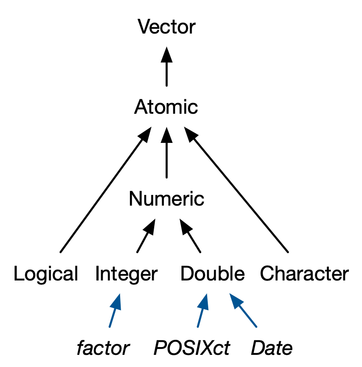

1 基本数据类型和数据结构
1.1 基本数据类型
基本数据类型（mode） 是指数据最基本的存储格式。在R中有5 种最基本的数据存储格式，分别是numeric（integer，double），character，logical，complex 和 raw。
强制类型转换： 逻辑 -> 整数 -> 浮点数 -> 字符
1.1.1 numeric
1.1.1.1 integer
1.1.1.2 double
十进制decimal ()，科学计数法scientific () ，十六进制hexadecimal ()
浮点标准定义的特殊值
-
Infinity 无穷大
Code
mode(-Inf) #> [1] "numeric" Inf #> [1] Inf -
NaN，Not a Number，非数字
1.1.2 character
Code
typeof("R language")
#> [1] "character"1.1.3 logical
比较运算符 ?Comparison
逻辑运算符?Logic
1.1.4 complex
1.1.5 raw
1.1.6 NA
NA，Not Available，不可用
实际上，每种原子类型有一个缺失值：NA_logical_、NA_integer_、NA_double_、NA_character_。
1.2 数据结构
R中的数据结构包括 原子向量（atomic vector）和泛型向量（generic vector）。
原子向量是基本数据类型（numeric，character，logical，complex，raw）的数组（一维vector，二维matrix，多维array）。
泛型向量是原子向量的集合，即列表
list。
1.2.1 属性
在R中任何一个object都具有两个最基本的属性：基本数据类型 “mode” 和 长度”length”，可以通过调用mode()（或 typeof()）和length() 查看，但无法通过 attributes() 查看。
对于vector，其mode与class属性一致。
对于由vector构建出来的其他更复杂的数据结构，其存储结构mode由其存储的最基本的数据类型决定。如matrix可以用于存储数值型数据，也可以用于存储字符串型数据。
在R中有多种方式查看object的属性，
-
class()函数，查看object的属性主要是站在面向对象编程的角度，因为知道object的属性后就可以查找相应的generic function对其操作。知道其为matrix后我们可以通过methods函数查找支持对matrix操作的generic function,Code
m1 <- matrix(1:6,nrow = 2) m1 #> [,1] [,2] [,3] #> [1,] 1 3 5 #> [2,] 2 4 6 class(m1) #> [1] "matrix" "array" methods(class="matrix") #> [1] anyDuplicated as.data.frame as.raster as_tibble boxplot #> [6] coerce determinant duplicated edit head #> [11] initialize isSymmetric Math Math2 Ops #> [16] relist subset summary tail unique #> see '?methods' for accessing help and source code -
attributes()主要是用于列出object所有已有的属性。Code
attributes(m1) #> $dim #> [1] 2 3 attr(x = m1,which = "dim") <- c(3,2) m1 #> [,1] [,2] #> [1,] 1 4 #> [2,] 2 5 #> [3,] 3 6 # 或者 a <- structure( m1, dim=c(1,6) ) str(attributes(a)) #> List of 1 #> $ dim: int [1:2] 1 6 a #> [,1] [,2] [,3] [,4] [,5] [,6] #> [1,] 1 2 3 4 5 6 -
typeof()主要站在R的角度查看object的属性，大多数情况下其返回值与mode一样。
大多数操作都会丢失大多数属性。
只有两个属性是例行保留的：
-
“names”，一个字符向量，为每个元素命名。
-
“dim”，dimensions 的缩写，整数向量，用于将向量转换为矩阵或数组。
对于原子向量，dimension 属性通常用于创建矩阵或数组。
Code
z <- 1:6 dim(z) <- c(3, 2, 1) z #> , , 1 #> #> [,1] [,2] #> [1,] 1 4 #> [2,] 2 5 #> [3,] 3 6 class(z) #> [1] "array" attributes(z) #> $dim #> [1] 3 2 1 dim(z) #> [1] 3 2 1对于列表，dimension 属性可用于创建列表矩阵或列表数组：
Code
l <- list(1:5, "a", TRUE, 1.0) dim(l) <- c(2, 2) l #> [,1] [,2] #> [1,] integer,5 TRUE #> [2,] "a" 1 class(l) #> [1] "matrix" "array" attributes(l) #> $dim #> [1] 2 2 l[[1,1]] #> [1] 1 2 3 4 5向量 矩阵 数组 names() rownames(),colnames() dimnames() length() nrow(),ncol() dim() c() rbind(),cbind() abind::abind() — t() aperm() is.null(dim(x)) is.matrix() is.array()
1.2.2 atomic vectors

1.2.2.1 vector
1.2.2.2 matrix
矩阵是一个具有维度属性（dim）的原子向量，所有元素必须是同一类型。
matrix(data= ,nrow=1 ,ncol=1 ,byrow=FALSE ,dimnames=list(rnames,cnames) ,...)
Code
num<-c(16,22,24,28)
rnames<-c("R1","R2")
cnames<-c("C1","C2")
m<-matrix(num,nrow=2,ncol=2,byrow=TRUE,dimnames=list(rnames,cnames))
m
#> C1 C2
#> R1 16 22
#> R2 24 28
class(m)
#> [1] "matrix" "array"
attributes(m)
#> $dim
#> [1] 2 2
#>
#> $dimnames
#> $dimnames[[1]]
#> [1] "R1" "R2"
#>
#> $dimnames[[2]]
#> [1] "C1" "C2"
dim(m)
#> [1] 2 2
rownames(m)
#> [1] "R1" "R2"
colnames(m)
#> [1] "C1" "C2"1.2.2.3 array
数组也是一个具有维度属性（dim）的原子向量，所有元素必须是同一类型。
array(data,dim_numeric_vector=c(...),dimnames = list(dim1,dim2,...),...)
Code
v<-1:24
dim1<-c("A1","A2","A3")
dim2<-c("B1","B2","B3","B4")
dim3<-c("C1","C2")
array_3d<-array(v,c(3,4,2),dimnames = list(dim1,dim2,dim3))
array_3d
#> , , C1
#>
#> B1 B2 B3 B4
#> A1 1 4 7 10
#> A2 2 5 8 11
#> A3 3 6 9 12
#>
#> , , C2
#>
#> B1 B2 B3 B4
#> A1 13 16 19 22
#> A2 14 17 20 23
#> A3 15 18 21 24
class(array_3d)
#> [1] "array"
attributes(array_3d)
#> $dim
#> [1] 3 4 2
#>
#> $dimnames
#> $dimnames[[1]]
#> [1] "A1" "A2" "A3"
#>
#> $dimnames[[2]]
#> [1] "B1" "B2" "B3" "B4"
#>
#> $dimnames[[3]]
#> [1] "C1" "C2"
dim(array_3d)
#> [1] 3 4 2
dimnames(array_3d)
#> [[1]]
#> [1] "A1" "A2" "A3"
#>
#> [[2]]
#> [1] "B1" "B2" "B3" "B4"
#>
#> [[3]]
#> [1] "C1" "C2"要保留其他属性，需要创建S3 类。
1.2.3 S3类原子向量
base R 中使用的四个重要的 S3类原子向量：
分类数据，其中值来自factor向量中记录的一组固定水平。
日期（具有日期分辨率），记录在Date向量中。
日期时间（具有秒或亚秒分辨率），存储在 POSIXct 向量中。
持续时间，存储在difftime向量中。

1.2.3.1 factor
因子，分类变量，建立在具有两个属性（class，levels）的 integer向量之上。
factor(vector,ordered=FALSE,levels=c(v1,v2,…),labels= ,...) ，在内存中以整数向量c(1,2,3,...,k)存储。
Code
# 存储形式
x <- factor(c("a", "b", "b", "a"))
x
#> [1] a b b a
#> Levels: a b
typeof(x)
#> [1] "integer"
attributes(x)
#> $levels
#> [1] "a" "b"
#>
#> $class
#> [1] "factor"
levels(x)
#> [1] "a" "b"
class(x)
#> [1] "factor"
# 名义变量 nominal variable
diabetes<-c("t1","t2","t1","t1")
attributes(diabetes)
#> NULL
diabetes<-factor(diabetes)
attributes(diabetes)
#> $levels
#> [1] "t1" "t2"
#>
#> $class
#> [1] "factor"
# 顺序变量 ordinal variable 默认水平根据字母顺序而定
status<-c("poor","better","best","poor")
status<-factor(status,ordered = TRUE)
str(status)
#> Ord.factor w/ 3 levels "best"<"better"<..: 3 2 1 3
status<-factor(status,ordered =TRUE,levels = c("poor","better","best"))
str(status)
#> Ord.factor w/ 3 levels "poor"<"better"<..: 1 2 3 1
#改变外在标签
sex<-c(1,2,2,1)
sex
#> [1] 1 2 2 1
sex<-factor(sex,levels=c(1,2),labels = c("男","女"))
str(sex)
#> Factor w/ 2 levels "男","女": 1 2 2 1
sex
#> [1] 男 女 女 男
#> Levels: 男 女
leadership <- read_csv("data/leadership.txt") |> column_to_rownames(var = "id")
# 连续型变量→因子
leadership$agecat<-cut(leadership$age,
breaks = c(0,18,45,65,Inf),
labels=c("minor","young","middle_age","elder"),
include.lowest = TRUE,
right = TRUE
)
leadership$agecat
#> [1] young young young elder elder
#> Levels: minor young middle_age elder1.2.3.2 Date
日期向量建立在 double 向量之上，具有class "Date"属性。
日期 默认格式："%Y-%m-%d" xxxx-xx-xx,例如：2023-03-15
Code
today <- Sys.Date()
today
#> [1] "2024-06-11"
typeof(today)
#> [1] "double"
attributes(today)
#> $class
#> [1] "Date"
class(today)
#> [1] "Date"
as.Date(c("02 14-2002","01 04-2013"),"%m %d-%Y") #以"%m %d-%Y"格式读入
#> [1] "2002-02-14" "2013-01-04"
format(Sys.Date(),"%Y/%m/%d") #以"%Y/%m/%d"格式输出
#> [1] "2024/06/11"
# 双精度值（通过剥离类来查看）表示自 1970 年 1 月 1 日以来的天数
date <- as.Date("1970-02-01")
unclass(date)
#> [1] 311.2.3.3 Datetime
POSIXct 和 POSIXlt
“POSIX”是可移植操作系统接口（ Portable Operating System Interface）的缩写，这是一个跨平台标准系列。“ct”代表calendar time（C 中的类型），“lt”代表local time（C 中的类型）。
POSIXct 向量建立在 double向量之上，其中值表示自 1970-01-01 以来的秒数
Code
now_ct <- as.POSIXct("2024-04-20 15:45", tz = "Asia/Shanghai")
now_ct
#> [1] "2024-04-20 15:45:00 CST"
typeof(now_ct)
#> [1] "double"
attributes(now_ct)
#> $class
#> [1] "POSIXct" "POSIXt"
#>
#> $tzone
#> [1] "Asia/Shanghai"
class(now_ct)
#> [1] "POSIXct" "POSIXt"1.2.3.4 Durations
持续时间（表示日期对或日期时间对之间的时间量）存储在difftimes中。Difftimes 建立在 double 之上，并且具有确定整数应如何解释的属性。
Code
units_1 <- as.difftime(1, units = "weeks") #units = c("auto", "secs", "mins", "hours","days", "weeks"))
units_1
#> Time difference of 1 weeks
typeof(units_1)
#> [1] "double"
attributes(units_1)
#> $class
#> [1] "difftime"
#>
#> $units
#> [1] "weeks"
class(units_1)
#> [1] "difftime"
units(units_1)
#> [1] "weeks"
units(units_1) <- "days"
attributes(units_1)
#> $units
#> [1] "days"
#>
#> $class
#> [1] "difftime"1.2.4 泛型向量（列表）
从技术上讲，列表的每个元素实际上是相同的类型，因为每个元素实际上是对另一个对象的引用 Figure fig-list ，该对象可以是任何类型。
1.2.4.1 list
列表不存储值本身，而是存储对它们的引用：

列表，list(name1=object1,name2=object2,...)
Code
list1<-list(title="My list",
matr=matrix(c("a1","b1","a2","b2"),nrow=2,ncol=2,byrow=TRUE,
dimnames = list(c("X1","X2"),c("Y1","Y2"))
),
df=data.frame(id=matrix(c("Lisa","BOb","John","Jule"),
nrow=4,ncol=1,byrow=TRUE
),
int=c(3,5,7,9),
TF=c(T,T,T,F)
),
list=list(a=c(1,2,3),b=c("A","B"))
)
list1
#> $title
#> [1] "My list"
#>
#> $matr
#> Y1 Y2
#> X1 "a1" "b1"
#> X2 "a2" "b2"
#>
#> $df
#> id int TF
#> 1 Lisa 3 TRUE
#> 2 BOb 5 TRUE
#> 3 John 7 TRUE
#> 4 Jule 9 FALSE
#>
#> $list
#> $list$a
#> [1] 1 2 3
#>
#> $list$b
#> [1] "A" "B"
typeof(list1)
#> [1] "list"
attributes(list1)
#> $names
#> [1] "title" "matr" "df" "list"
class(list1)
#> [1] "list"
names(list1)
#> [1] "title" "matr" "df" "list"1.2.4.2 data frame/tibble
建立在"list"之上的两个最重要的 S3 类是data.frame 和 tibble

数据框是列向量具有 names，row.names ，class”data.frame” 属性的命名列表，是一种特殊的列表，每个原子向量的长度必须相同。
Code
| patientID | age | diabetes | status |
|---|---|---|---|
| 1231 | 21 | t1 | poor |
| 1241 | 14 | t2 | better |
| 1413 | 52 | t1 | best |
| 1244 | 15 | t1 | poor |
Code
typeof(df1)
#> [1] "list"
attributes(df1)
#> $names
#> [1] "patientID" "age" "diabetes" "status"
#>
#> $class
#> [1] "data.frame"
#>
#> $row.names
#> [1] "1" "2" "3" "4"
class(df1)
#> [1] "data.frame"
names(df1)
#> [1] "patientID" "age" "diabetes" "status"
colnames(df1)
#> [1] "patientID" "age" "diabetes" "status"
row.names(df1)
#> [1] "1" "2" "3" "4"
rownames(df1)
#> [1] "1" "2" "3" "4"tibblle与data frame共享相同的结构。区别是class属性更多,不会自动进行强制类型转换，不会自动转换非法名称（自动反引号非法名称）， tibbles 只能循环较短的长度为 1 的向量，允许引用在构造过程中创建的变量。
Code
| x | y |
|---|---|
| 1 | 1 |
| 2 | 1 |
| 3 | 1 |
| 4 | 1 |
Code
| x | y |
|---|---|
| 1 | 2 |
| 2 | 4 |
| 3 | 6 |
1.2.4.3 行名→列
Code
df3 <- data.frame(
age = c(35, 27, 18),
hair = c("blond", "brown", "black"),
row.names = c("Bob", "Susan", "Sam")
)
df3 |> rownames_to_column(var = "name")| name | age | hair |
|---|---|---|
| Bob | 35 | blond |
| Susan | 27 | brown |
| Sam | 18 | black |
Code
as_tibble(df3, rownames = "name")| name | age | hair |
|---|---|---|
| Bob | 35 | blond |
| Susan | 27 | brown |
| Sam | 18 | black |
| age | hair |
|---|---|
| 35 | blond |
| 27 | brown |
| 18 | black |
1.2.4.4 列表列
Code
df <- data.frame(x = 1:3)
df$y <- list(1:2, 1:3, 1:4)
df| x | y |
|---|---|
| 1 | 1, 2 |
| 2 | 1, 2, 3 |
| 3 | 1, 2, 3, 4 |
Code
data.frame(
x = 1:3,
y = I(list(1:2, 1:3, 1:4))
)| x | y |
|---|---|
| 1 | 1, 2 |
| 2 | 1, 2, 3 |
| 3 | 1, 2, 3, 4 |
| x | y |
|---|---|
| 1 | 1, 2 |
| 2 | 1, 2, 3 |
| 3 | 1, 2, 3, 4 |
1.2.4.5 矩阵和数据框列
行数必须相等
Code
dfm <- data.frame(
x = 1:3 * 10
)
dfm$y <- matrix(1:9, nrow = 3)
dfm$z <- data.frame(a = 3:1, b = letters[1:3], stringsAsFactors = FALSE)
dfm| x | y | z |
|---|---|---|
| 10 | 1 | 3 |
| 20 | 2 | 2 |
| 30 | 3 | 1 |
1.3 NULL
长度始终为零，并且没有属性。